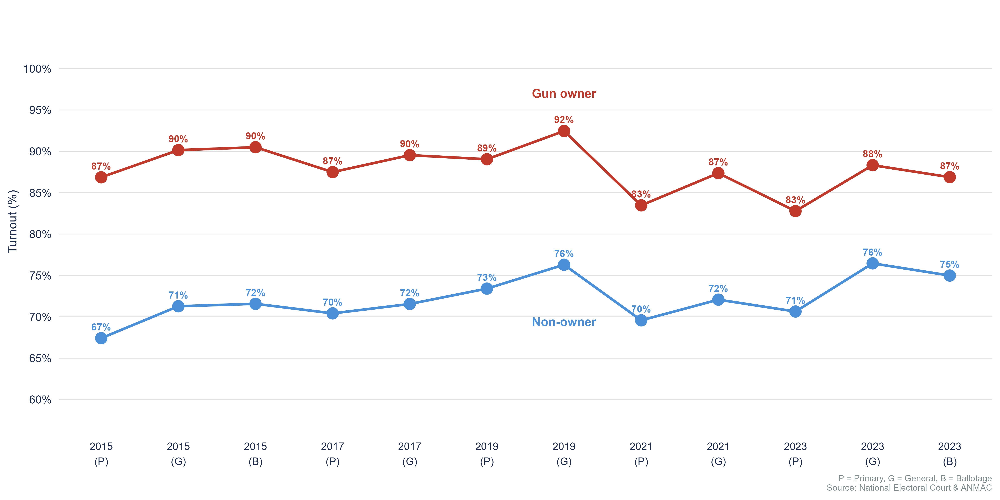
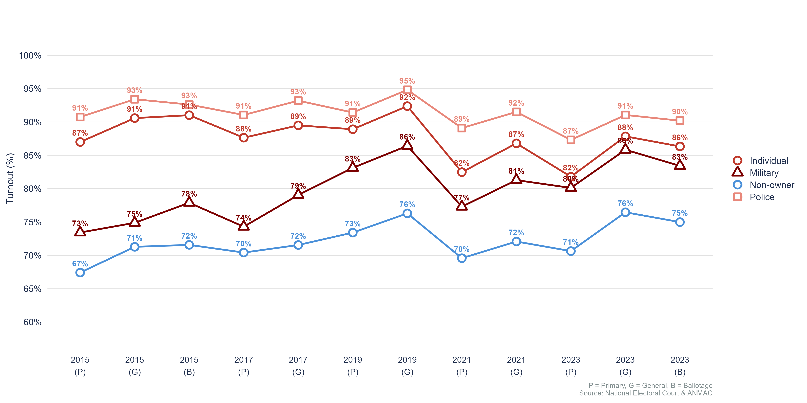
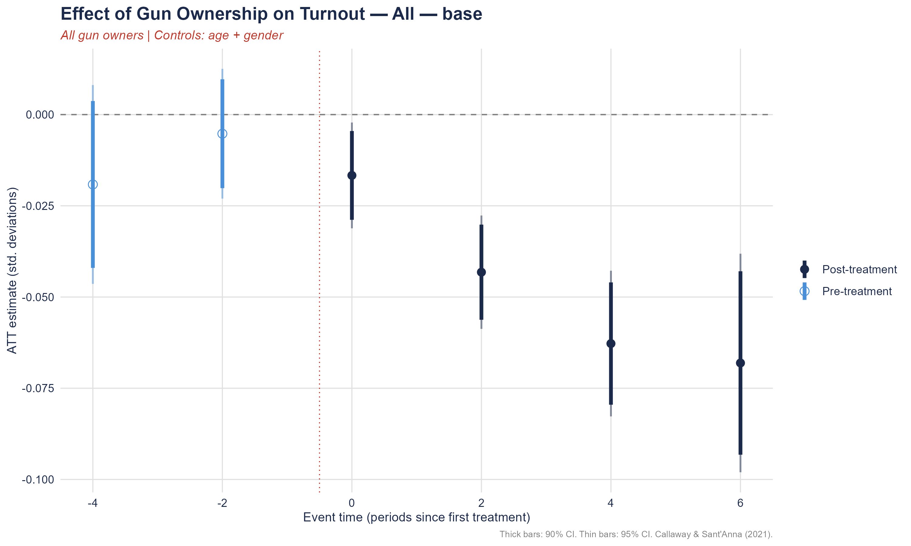
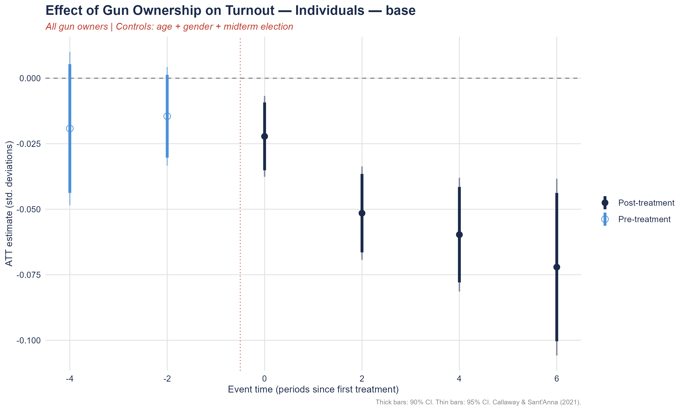
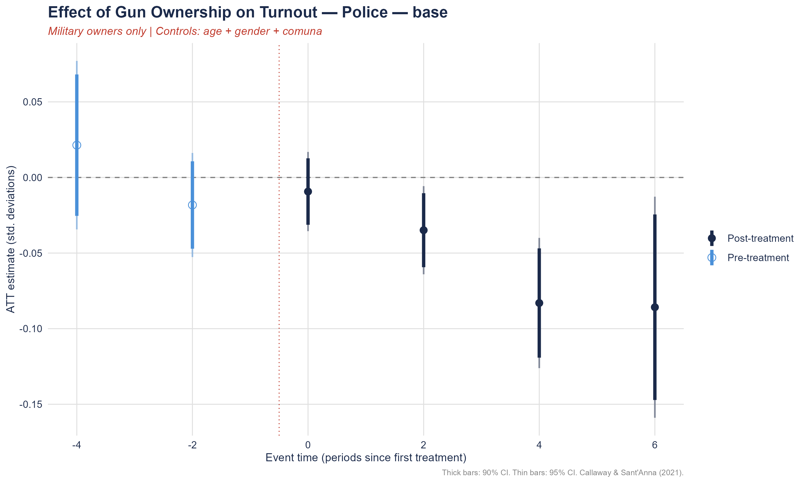
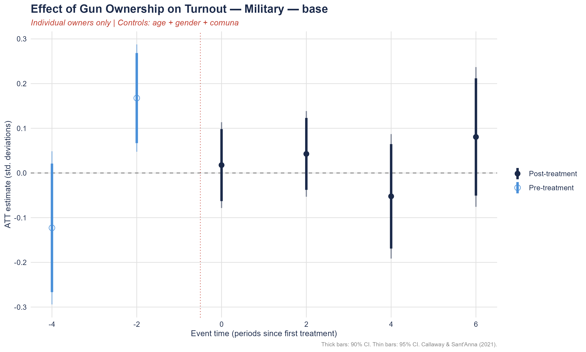
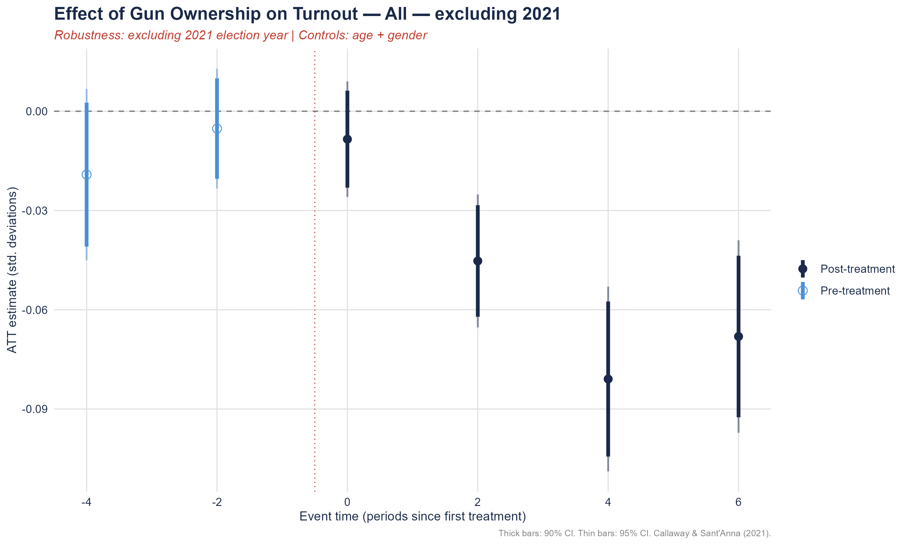
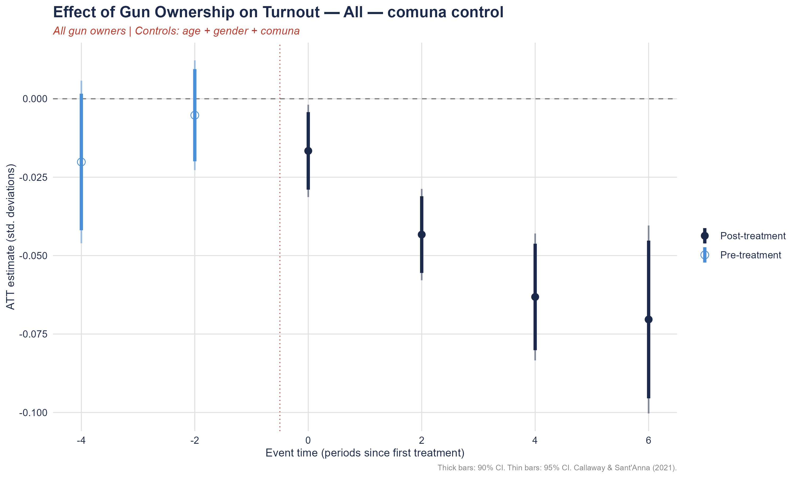

| id | year | voted | first_year_treated | comuna | men | age | type |
|---|---|---|---|---|---|---|---|
| 213379 | 2015 | 1 | 2015 | COMUNA 5 | 1 | 68 | policial |
| 213379 | 2017 | 0 | 2015 | COMUNA 5 | 1 | 68 | policial |
| 213379 | 2019 | 0 | 2015 | COMUNA 5 | 1 | 68 | policial |
| 213379 | 2021 | 0 | 2015 | COMUNA 5 | 1 | 68 | policial |
| 213379 | 2023 | 1 | 2015 | COMUNA 5 | 1 | 68 | policial |
| 145199 | 2015 | 1 | 0 | COMUNA 5 | 0 | 23 | NA |
| 145199 | 2017 | 1 | 0 | COMUNA 5 | 0 | 23 | NA |
| 145199 | 2019 | 1 | 0 | COMUNA 5 | 0 | 23 | NA |
| 145199 | 2021 | 1 | 0 | COMUNA 5 | 0 | 23 | NA |
| 145199 | 2023 | 1 | 0 | COMUNA 5 | 0 | 23 | NA |
Security Privatization and Democratic Participation:
Evidence from Argentina
Guadalupe Gonzalez
2025-12-31
The Conventional Wisdom
Gun owners vote more than non-owners
Gun owners vote more than non-owners
United States (1972–2016)

Source: Joslyn (2020)
Buenos Aires (2015–2023)

Source: National Electoral Court & ANMAC
Voting patterns depend on affiliation (Buenos Aires (2015–2023))

The Puzzle
Gun owners vote more —
but does acquiring a gun cause higher participation?
Gun owners vote more — but does acquiring a gun cause higher participation?
Registering a firearm causes a decline in voter turnout
of 2–7 percentage points, growing over time
→ Arming is an exit decision
Gonzalez & Visconti (Working Paper)
Acquiring a Gun in Argentina
The Legítimo Usuario License
To legally own a firearm, individuals must obtain a Legítimo Usuario license from ANMAC (National Agency for Controlled Materials):
- 📋 Submit application with DNI (national ID)
- 🧠 Pass psychological and aptitude tests
- 🏥 Pass medical examination
- 👮 Pass criminal background check
- 💰 Pay registration fee
- 🔫 Register each firearm individually
All registrations are timestamped by DNI — allowing us to identify the precise moment each individual entered gun ownership
Electoral Obligations
Argentina has compulsory voting for citizens aged 18–70:
- 🗳️ Abstention triggers an administrative fine
- 📝 Citizens can justify absence or pay the fine
- 🔒 Non-compliance affects access to public services
Data
Data Sources: ANMAC, National Electoral Chamber.
Sample Overview
Who is in the sample?
| Statistic | Value |
|---|---|
| Total individuals | 218,514 |
| Gun owners | 17,194 |
| Gun owners (%) | 7.87% |
| Male (%) | 50.8% |
| Mean age (years) | 50.7 |
Demographics by Gun Owner Type
| User Type | N | Mean Age | Male (%) |
|---|---|---|---|
| No gun | 201,320 | 50.2 | 47.2% |
| Individual | 12,760 | 57.0 | 93.0% |
| Police | 3,263 | 56.8 | 91.5% |
| Armed Forces | 1,031 | 58.0 | 95.2% |
| Penitentiary | 140 | 54.7 | 95.7% |
Research Design
Identification Strategy
Staggered Difference-in-Differences (Callaway & Sant’Anna, 2021)
| Treatment | First election after gun registration (If registered in year t, treated from t+1) |
| Comparison | Never-registered individuals |
| Covariates | Age, gender, comuna fixed effects |
Key Identifying Assumption
In the absence of gun registration, treated and never-treated individuals would have followed parallel turnout trajectories
Validation
✅ Pre-treatment coefficients centered near zero
✅ Robust to excluding 2021 (COVID midterm)
✅ Robust to comuna controls
Results: Turnout Declines After Gun Registration
All gun owners

Results: Turnout Declines After Gun Registration
All gun owners
Results: Turnout Declines After Gun Registration
Individual owners only

Results: Turnout Declines After Gun Registration
All gun owners
Individual owners only
Effects grow over time: −2pp at impact → −7pp six elections later. Pre-trends flat.
Heterogeneity by Owner Type
Police owners

Military owners ⚠️

Police: similar negative pattern. Military: pre-trends violated.
Robustness
Excluding 2021 (COVID midterm)

With comuna controls

Results are stable across all robustness checks — estimates not driven by COVID shock or neighborhood-level confounders.
Conclusion
- Gun registration causes a decline in voter turnout of 2–7pp, growing over time
- Effects concentrated among individual and police owners
- Turnout declines are conservative — compulsory voting mechanically compresses the effect
Thank you!
Questions? 🙋
Guadalupe Gonzalez
PhD Student, Department of Government and Politics · University of Maryland, College Park
🌐 Website
🎓 Google Scholar
Appendix: Treatment Cohorts
Treatment group composition
| First treated (g) | N | Interpretation |
|---|---|---|
| 0 | 204,461 | Never treated (control group) |
| 2015 | 11,801 | Gun registered before 2015 |
| 2017 | 722 | Gun registered in 2015–2016 |
| 2019 | 831 | Gun registered in 2017–2018 |
| 2021 | 698 | Gun registered in 2019–2020 |
Note: Group 2015 is dropped from the DiD estimation as units are already treated in the first period of the panel. Sample restricted to GENERALES elections.
Balance Table
| Variable | Mean (Never Treated) | Mean (Treated) | SD (Never Treated) | SD (Treated) | p-value |
|---|---|---|---|---|---|
| Mean Age | 41.1 | 39.2 | 19.8 | 13.0 | <0.001 |
| Proportion Male | 0.479 | 0.920 | 0.500 | 0.272 | <0.001 |
| Birth Year | 1974 | 1976 | 19.8 | 13.0 | <0.001 |
Note: Pre-treatment covariate balance between treated and never-treated units. p-values from two-sided t-tests. {#tbl-balance}
Turnout — All Gun Owners
| Event Time | All — base | All — comuna control | All — excl. 2021 | All — excl. 2021 cohort |
|---|---|---|---|---|
| e = -4 | -0.0191 (0.0139) | -0.0202 (0.0132) | -0.0191 (0.0132) | — |
| e = -2 | -0.0052 (0.0091) | -0.0052 (0.0089) | -0.0052 (0.0092) | 0.0000 (0.0129) |
| e = 0 | -0.0167* (0.0074) | -0.0166* (0.0075) | -0.0084 (0.0089) | -0.0084 (0.0083) |
| e = 2 | -0.0432* (0.0079) | -0.0433* (0.0074) | -0.0452* (0.0102) | -0.0334* (0.0098) |
| e = 4 | -0.0628* (0.0102) | -0.0632* (0.0103) | -0.0809* (0.0142) | -0.0628* (0.0106) |
| e = 6 | -0.0681* (0.0153) | -0.0704* (0.0153) | -0.0681* (0.0148) | -0.0681* (0.0144) |
| Overall ATT | -0.0477* (0.0077) | -0.0484* (0.0075) | -0.0507* (0.0081) | -0.0432* (0.0082) |
Standard errors in parentheses. * 95% CI excludes zero. Callaway & Sant’Anna (2021). Note: pre-trend test p = 0.033.
Turnout — Individual Gun Owners
| Event Time | Individuals — base | Individuals — comuna |
|---|---|---|
| e = -4 | -0.0192 (0.0149) | -0.0205 (0.0146) |
| e = -2 | -0.0145 (0.0096) | -0.0143 (0.0098) |
| e = 0 | -0.0222* (0.0079) | -0.0224 (0.0088) |
| e = 2 | -0.0515* (0.0091) | -0.0517* (0.0093) |
| e = 4 | -0.0597* (0.0111) | -0.0601* (0.0123) |
| e = 6 | -0.0721* (0.0172) | -0.0741* (0.0179) |
| Overall ATT | -0.0514* (0.0085) | -0.0521* (0.0088) |
Standard errors in parentheses. * 95% CI excludes zero. Callaway & Sant’Anna (2021). Note: pre-trend test p = 0.033.
Turnout — Military Gun Owners
| Event Time | Military — base | Military — comuna |
|---|---|---|
| e = -4 | -0.1228 (0.0874) | -0.1227 (0.0930) |
| e = -2 | 0.1676* (0.0613) | 0.1669* (0.0598) |
| e = 0 | 0.0177 (0.0490) | 0.0188 (0.0501) |
| e = 2 | 0.0427 (0.0489) | 0.0433 (0.0534) |
| e = 4 | -0.0522 (0.0711) | -0.0526 (0.0660) |
| e = 6 | 0.0806 (0.0798) | 0.0789 (0.0823) |
| Overall ATT | 0.0222 (0.0450) | 0.0221 (0.0428) |
Standard errors in parentheses. * 95% CI excludes zero. Callaway & Sant’Anna (2021). Note: pre-trend test p = 0.033.
Turnout — Police Gun Owners
| Event Time | Police — base | Police — comuna |
|---|---|---|
| e = -4 | 0.0214 (0.0284) | 0.0210 (0.0291) |
| e = -2 | -0.0182 (0.0176) | -0.0190 (0.0187) |
| e = 0 | -0.0093 (0.0134) | -0.0086 (0.0142) |
| e = 2 | -0.0349 (0.0149) | -0.0349 (0.0153) |
| e = 4 | -0.0830* (0.0220) | -0.0837* (0.0224) |
| e = 6 | -0.0858 (0.0373) | -0.0896* (0.0343) |
| Overall ATT | -0.0533* (0.0161) | -0.0542* (0.0153) |
Standard errors in parentheses. * 95% CI excludes zero. Callaway & Sant’Anna (2021). Note: pre-trend test p = 0.033.
Gonzalez | Security Privatization and Democratic Participation